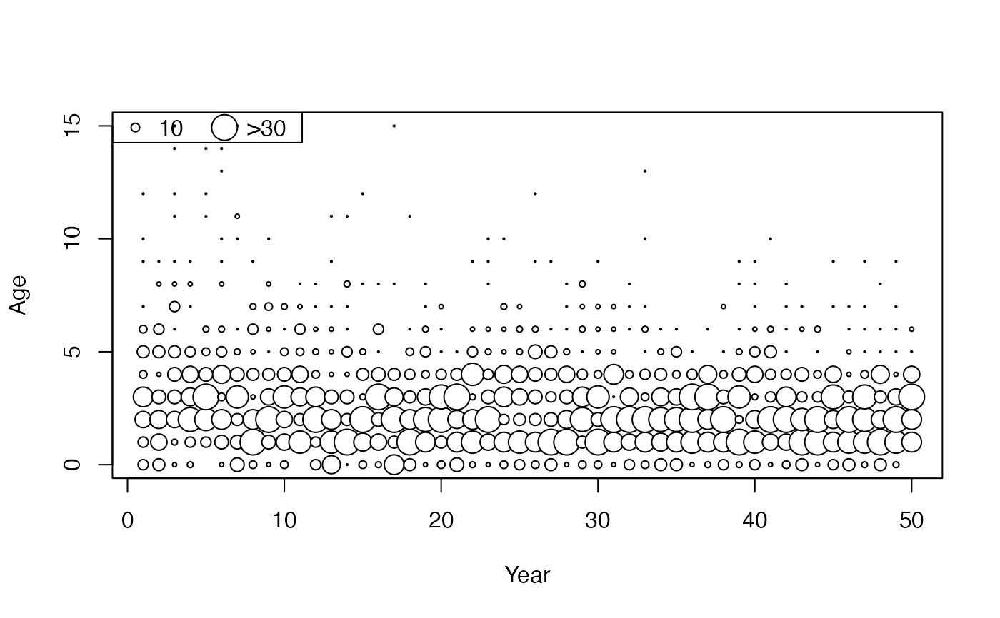
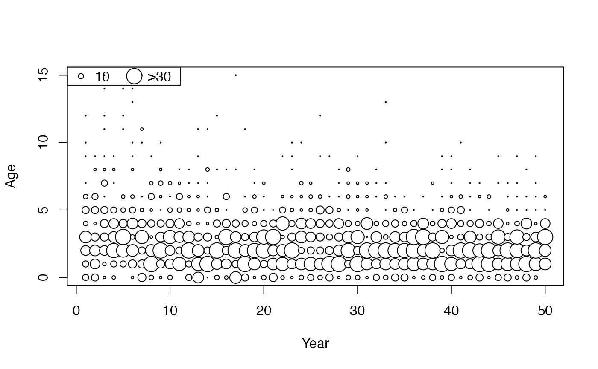

Plots annual length or age composition data.
plot_composition(
Year = 1:nrow(obs),
obs,
fit = NULL,
plot_type = c("annual", "bubble_data", "bubble_residuals", "mean"),
N = rowSums(obs),
CAL_bins = NULL,
ages = NULL,
ind = 1:nrow(obs),
annual_ylab = "Frequency",
annual_yscale = c("proportions", "raw"),
bubble_adj = 5,
bubble_color = c("black", "white"),
fit_linewidth = 3,
fit_color = "red"
)Arguments
- Year
A vector of years.
- obs
A matrix of either length or age composition data. For lengths, rows and columns should index years and length bin, respectively. For ages, rows and columns should index years and age, respectively.
- fit
A matrix of predicted length or age composition from an assessment model. Same dimensions as obs.
- plot_type
Indicates which plots to create. Options include annual distributions, bubble plot of the data, and bubble plot of the residuals, and annual means.
- N
Annual sample sizes. Vector of length
nrow(obs).- CAL_bins
A vector of lengths corresponding to the columns in
obs. andfit. Ignored for age data.- ages
An optional vector of ages corresponding to the columns in
obs.- ind
A numeric vector for plotting a subset of rows (which indexes year) of
obsandfit.- annual_ylab
Character string for y-axis label when
plot_type = "annual".- annual_yscale
For annual composition plots (
plot_type = "annual"), whether the raw values ("raw") or frequencies ("proportions") are plotted.- bubble_adj
Numeric, for adjusting the relative size of bubbles in bubble plots (larger number = larger bubbles).
- bubble_color
Colors for negative and positive residuals, respectively, for bubble plots.
- fit_linewidth
Argument
lwdfor fitted line.- fit_color
Color of fitted line.
Value
Plots depending on plot_type.
Examples
plot_composition(obs = SimulatedData@CAA[1, 1:16, ])
 plot_composition(obs = SimulatedData@CAA[1, , ], plot_type = "bubble_data",
ages = 0:SimulatedData@MaxAge)

plot_composition(obs = SimulatedData@CAA[1, , ], plot_type = "bubble_data",
ages = 0:SimulatedData@MaxAge)
